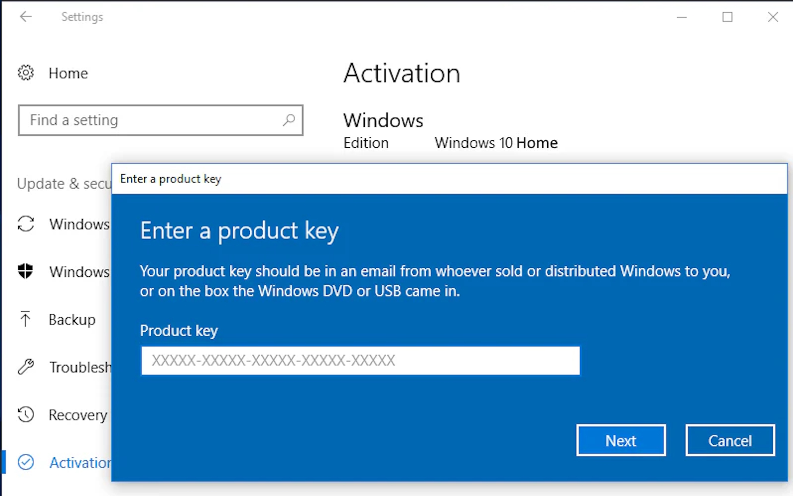

1. Accesați link-ul de descărcare furnizat și salvați fișierul pe calculatorul dumneavoastră.

2. Localizați fișierul descărcat, de obicei în folderul „Descărcări” / „Downloads”.

3. Faceți dublu click pe „setup.exe” pentru a începe instalarea

4. Dacă vi se solicită permisiune de către sistem, apăsați „Da” pentru a continua.

5. Introduceți cheia de activare primită împreună cu produsul.
6. Urmați pașii indicați pe ecran și așteptați ca instalarea să se finalizeze (poate dura câteva minute).

6. După instalare, deschideți Adobe Acrobat Pro DC din meniul Start sau din pictograma creată pe desktop.